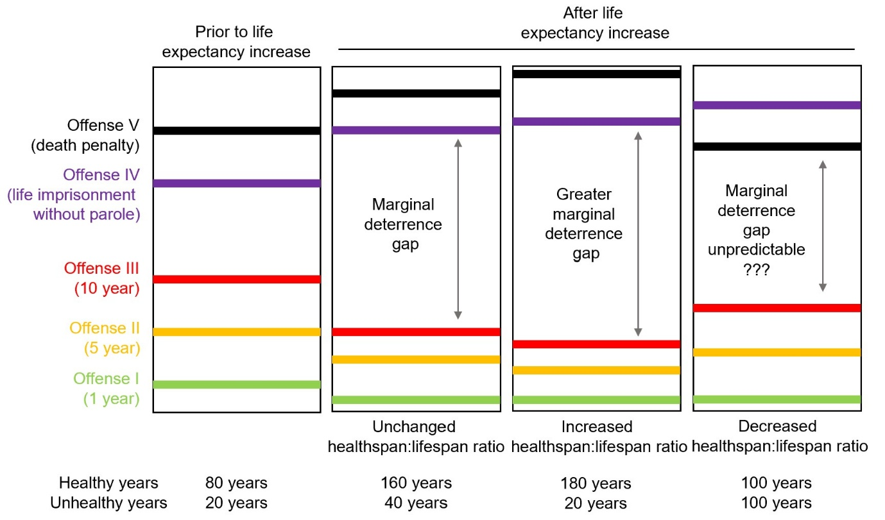

As global life expectancy increases and biotechnology advances in rejuvenation, it is necessary to consider how extended human lifespans impact the justice system and policymaking. This paper explores the legal and ethical implications that life-extension technologies pose. With advancements in geroscience — such as extended healthspan, the clinical application of epigenetic ageing clocks, and cellular reprogramming technology — traditional imprisonment may no longer be effective as a deterrent. It is crucial to reassess penal philosophies and legal practices to align with these changes. This paper aims to contribute to the dialogue on administering justice in an era of unprecedented longevity, advocating for a flexible and responsive legal framework.
The pursuit of extending human life has shifted from myth to scientific reality, with advancements in genetics, cell biology, and regenerative medicine revealing mechanisms of ageing and paving the way for interventions to slow the ageing process, combat age-related diseases, and even rejuvenate the human body. For instance, DNA methylation clocks have significantly enhanced our ability to measure biological age, offering insights into an individual's health status. Genomics has, at least partially, identified longevity-associated genes, providing potential therapeutic targets for lifespan extension. Additionally, regenerative medicine, through stem cells and tissue engineering, promises to repair or replace damaged organs in a modularised manner, transforming our approach to age-related decline.
These biotechnological advancements raise ethical questions and challenge traditional social norms and legal practices. The prospect of significantly extended human lifespans, driven by breakthroughs in medicine and biotechnology, has unprecedented implications for all aspects of life, including the justice system. As suggested by many legal concepts, such as age of criminal responsibility and legal working age, law closely interacts with the concept of age and time, shaping societal experiences and expectations. The purposes of punishment — such as retribution, deterrence, rehabilitation, and societal protection — have been debated for centuries within the context of a relatively constant maximum human lifespan. However, with potential radical extensions in longevity, these purposes need re-examination. This paper explores how criminal law, particularly non-monetary sanctions, should adapt to extended human lifespans. This question was first raised a decade ago by Rebecca Roache, where lifespan enhancement, mind uploading, altering perception of duration, and robot prison officers were considered as methods to increase punishment severity without drastically changing the legal system. In 2015, Eldar Haber systematically analysed whether criminal punishment should change in response to extended lifespans under various legal philosophies, a topic that remains underexplored by scholars and policymakers.
Recently, three key developments have emerged from bioethics and biotechnology: the shift from the pursuit of lifespan to the pursuit of healthspan (which leads to a varying healthspan-to-lifespan ratio), the creation of an epigenetic ageing clock, and advances in cellular reprogramming technology. These innovations challenge the current justice system and highlight the urgency of re-evaluating legal frameworks in response to geroscience advances. This paper aims to contribute to the ongoing dialogue on administering justice in an era of unprecedented human longevity and healthspan, emphasising the need for legal systems to adapt to the evolving human condition.
The transition from focusing solely on lifespan to emphasising healthspan marks a significant shift in the objectives of contemporary medical research and public health policy. Whilst traditionally, the aim has been to extend the maximum number of years lived, the goal of current scientific endeavours is to enhance the quality of life during those additional years, ensuring that they are lived in good health and free from disease. This is beneficial on a societal scale as significant economic benefits can be generated by targeting ageing. In alignment with this shift, several companies and research institutions are actively pursuing advancements in the science of healthspan extension. Prominent examples include Altos Labs and Calico Labs, two biotechnology companies focused on restoration of cell health and resilience, thereby addressing the root causes of age-related decline.
Under pure economic analysis, this paradigm shift recognises that the value of longevity increases dramatically when it is coupled with vitality and functional independence. Consequently, it introduces a nuanced perspective to the original marginal deterrence gap model proposed by Haber. Marginal deterrence refers to the notion that penalties must be scaled according to the severity of crimes, to deter individuals from committing more severe offenses. In his original model, Haber illustrated marginal deterrence gap by proposing a scenario where criminal law consists of five criminal offenses. From offense I to V, the severity of punishment gradually increases from 1-year imprisonment to death penalty, as shown in Fig. 1. When life expectancy increases, the relative values of offenses I to III decrease and that of offenses IV–V increase as the value of the crime changes (assuming the convicted are rational utility maximisers), creating a marginal deterrence gap. When healthspan increases alongside an extended lifespan, the marginal deterrence gap widens further, as illustrated in Figure 1. More specifically, the deterrence power of death penalty and life imprisonment without parole further increases and the deterrence power of prison sentence with limited terms further decreases. This further emphasises the urgency of considering the "inflation of longevity" in policymaking and legislation.
When the rate of lifespan extension outpaces that of healthspan extension, resulting in a reduced healthspan-to-lifespan ratio, it introduces multiple layers of complexity. First, it diminishes the deterrent effect of the death penalty. As the proportion of unhealthy or dependent years increases toward the end of one's lifespan, death may be perceived more as a release than a punishment. Second, life imprisonment without parole may become a more powerful deterrent. Assuming that medical interventions available in prison are more limited than those outside, life imprisonment without parole could make the final, dependent years significantly more challenging. Third, the deterrence power of prison sentence with limited terms is difficult to predict as it is influenced by multiple factors, such as the age of the offender and their perception of the punishment. As Haber pointed out, "a dying person, knowing that she only has a few weeks to live, might not act similarly to a young healthy person knowing that statistically she has a relatively long life to live."

Despite the complexity introduced here, it is still necessary to consider how individual factors influence decision-making in the legal context. Ideally, we would have personalised punishment to ensure that different individuals receive deterrents calibrated to produce similar behavioural outcomes. However, this approach presents a significant challenge: how do we accurately determine someone's age? Age is not just a number; it encapsulates a range of physical, cognitive, and emotional factors that vary widely among individuals. Accurately assessing these factors is a crucial first step for implementing a justice system that can adapt to the nuances of each person's unique circumstances and ensure equitable deterrence and rehabilitation outcomes.
Chronological age has been utilised in law and policymaking since the inception of legal systems. Over the past decade, researchers have developed biochemical tests that estimate an individual's biological age using DNA methylation levels at various CpG sites in specific cell types, lipid profiles or stochastic variations in the genome. These age and ageing estimators offer a valuable tool for deciphering the biological mechanisms behind ageing-related disorders and screening for anti-ageing interventions. Although these clocks raise various ethical and social concerns, they enable a quantitative assessment of healthspan by the justice system on an individual basis, providing a more nuanced approach to legal considerations, making personalised nonmonetary sanction technologically possible in criminal law.
Similar to personalised medicine where healthcare treatments are tailored to the individual characteristics of each patient, personalised punishment refers to the concept of tailoring penalties and sentences to the individual circumstances of the offender, rather than applying a one-size-fits-all approach. This method aims to make punishment more equitable and effective by considering factors such as the offender's income, wealth, social status, and personal background. For example, in the context of monetary penalties for offenses like speeding, a wealthy individual might be charged a higher fine compared to someone with less financial resources. This approach, known as sliding-scale penalties, has been implemented in Finland. The rationale behind this approach is that a standard fine may represent a significant hardship for a person of lower socioeconomic status, while being merely inconsequential for someone with substantial wealth. By adjusting fines based on the offender's ability to pay, personalised punishment seeks to ensure that the punitive impact of the penalty is more evenly felt across different segments of the population. This approach can also be extended to nonmonetary sanctions.
Tailored psychological incentives offer a means to influence behaviour by considering the individual's psychological profile, life circumstances, and the potential for future societal contribution. In the case of extended lifespans, these incentives can be strategically designed to encourage rehabilitation and positive behaviour over much longer periods, thereby reducing recidivism and fostering a more adaptive reintegration into society. Furthermore, the relevance of personalised punishment in the context of increased lifespans lies in its potential to address the disproportionate impact of long-term sentences on individuals. Tailored psychological incentives based on measured biological age can provide more accurate customised rehabilitation pathways, considering the offender's stage in the extended lifespan continuum, ensuring that the punishment remains just, effective, and conducive to societal reintegration.
Inspired by cellular reprogramming — a process by which differentiated cells are converted back into a pluripotent stem cell state — epigenetic rejuvenation is a technology that "rewrites" cells to pluripotency through genetic or chemical interventions, reversing age-related cellular phenotypes. As epigenetic rejuvenation technology matures, the line between natural human life and an artificially improved version may become blurred. It is thus necessary to distinguish between what should be considered the natural lifespan — which laws and ethics dictate we have a duty to protect — and what might be seen as additional lifespan, an extension that could be regarded as a privilege rather than a right. This new reality in geroscience raises two questions in the legal system.
Expanding the discussion to the realm of punishment and incarceration, imagine inmates having access to biotechnologies that rejuvenate them, effectively counteracting the physical consequences of their sentences. This scenario poses a critical question: Does the ability to reverse the effects of punishment, similar to how medical interventions can alter the course of diseases, diminish the purpose and efficacy of the penal system? Should certain criminals, if not all, be prohibited from benefiting from these technologies to protect the effectiveness of imprisonment? In historical contexts where corporal punishment was employed, the existence of a hypothetical potion enabling immediate limb regeneration would have directly challenged the intended impact of such penalties.
Another challenging question arises when the justice system takes the potential of rejuvenation into decision-making: Can life-extending technologies be withheld as a form of punishment? To borrow from the philosophical inquiry of Judith Thomson in the Trolley Problem, are such acts tantamount to "killing" or merely "letting die"? This query becomes even more pressing when considering various scenarios: refusing to administer chemotherapy to an early-stage cancer patient, withholding antibiotics from someone suffering from sepsis, or not throwing a life ring to a drowning girl. Each of these actions — or inactions — carries the potential to drastically alter the course of an individual's life, raising the question of whether such refusals constitute an act of killing or a passive allowance of death. As punishment and reward influence behaviour through different psychological mechanisms, it is worth considering whether withholding life-extension technology, and occasionally using it as a reward, might be more beneficial than using its denial as a punishment.
The changing ratio between lifespan and healthspan, the advancements in epigenetic ageing clocks, and the advent of cellular reprogramming are evolutionary developments in biotechnology because of their unprecedented capability to redefine human conditions. They have the potential to improve human health but also challenge current non-monetary sanctions. It is therefore important to reassess how justice is administered, question whether current sentencing practices can remain just and effective in the face of such unprecedented changes, and involve empirical research in policymaking.
← back to blog